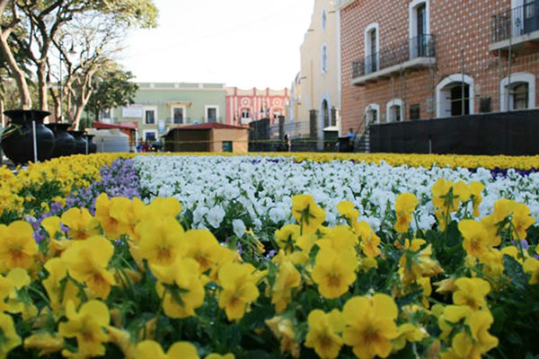

Se ubica a 25 km de la ciudad de Puebla, capital del Estado y cuenta con dos importantes vías de acceso: la Carretera Federal 190 y la moderna Autopista Vía Atlixcáyotl.
Actualmente, es una moderna ciudad con más de cien mil habitantes, que ha logrado armonizar su desarrollo urbano con el majestuoso legado de arquitectura colonial que dejaron sus fundadores (1579), y que hoy es uno de los principales atractivos turísticos de este municipio.
Una vuelta por el zócalo es una experiencia inolvidable, saboreando los ricos helados y sorbetes que venden cerca de allí, así mismo entrar a algún restaurante para degustar la cecina atlixquense, el guacamole, el consomé Atlixquense, o las truchas en sus diferentes modalidades. A tan solo una cuadra del centro, en el mercado encontrarás tortillas hechas a mano, expendios de cecina, tlacoyos, quesos frescos de la región o si eres de "gustoso paladar" podrás comer los originales chapulines fritos con sal y limón.
Atlixco de las Flores, como le llaman propios y extraños, conserva sus tradiciones y costumbres.
Descubre cada rincón de Atlixco comenzando en el centro de la ciudad.Motivado por el mejor clima del mundo y la naturaleza que envuelve el lugar, detente en los miradores acondicionados para tu visita y dirige tu rumbo hacia la ermita de San Miguel Arcángel, guardián de toda nuestra ciudad.
Atlixco Zona Turística
Día de Muertos
Tapete Monumental de Día de Muertos
El Pueblo Mágico de Atlixco, con motivo del Día de Muertos, instaló su tapete monumental floral con 42 mil 922 plantas de Cempazúchil, en un espacio de 700 metros cuadrados, justo frente al Palacio Municipal fue colocado dicho tapete luciendo las flores con la variedad de colores, propias de la temporada, el cual fue colocado en días pasados. Toda la variedad de Cempasúchil en su flor amarilla y blanca, así como crisantemo blanco y morado, curry, amaranto y coleo, están en las figuras del palacio municipal.El Ayuntamiento colocó un pasillo elevado para que los visitantes y habitantes puedan recorrer el tapete monumental y con ello admiren dicha obra.

En su momento el alcalde de Atlixco, José Luis Galeazzi resaltó que van a consolidar al municipio como un referente nacional e internacional en la producción de flores de diferentes tipos.
Resaltó que van a promover las tradiciones culturales, artesanales y culinarias, con el objetivo de aumentar la atracción turística y la derrama económica.El tapete monumental es el tercero del año, pues iniciaron en la Semana Santa y siguieron con los 50 años del Huey Atlixcayotl.
Desfile de Calaveras
Esperan a más de 120 mil visitantes que además podrán disfrutar de la exposición de Catrinas.
Atlixco. Autoridades municipales han organizado una serie de eventos artísticos y culturales conmemorativos al Día de Muertos, con lo que buscan generar una derrama económica superior a los 4 millones de pesos.
Uno de los atractivos es el Tapete Monumental de Flores alusivo a estos días y que ya se exhibe afuera del palacio municipal; el cual está compuesto por más de 3 mil flores y que estará hasta el 17 de noviembre. Además del Tradicional Desfile de Calaveras que se realizará el 2 de noviembre y en el cual cientos de personas disfrazadas acorde a la tradición buscan preservar la costumbre mexicana.
Para este año como un atractivo más durante estas festividades, se encuentra la Muestra de Catrinas de más de 2 metros de altura por principales calles, mismas que se realizaron por jóvenes artistas Atlixquenses y que se expondrán del 25 de octubre al 2 de noviembre.
Atlixco Zona Turística
Feria Huey Atlixcayotl
Etimológicamente:
• Huey = Grande
• Atlix = Topónimo de Atlixco
• Yotl = corazón, esencia e identidad
Originalmente la fiesta se reducía al sábado y domingo últimos de septiembre.
Hoy en la actualidad abarca toda una semana de actividades culturales que van desde exposiciones de flores, óleos, muestra artesanal, audición de bandas de viento y concursos florales o de animales.El festival se desarrolla presentando danzas como las pastoras, negritos, tecuanis, santiagos, migueles, toreadores, quetzales, charros, voladores, entre otras que incluyen algún ritual indígena para hacer un total de 11 a 15 danzas con 400 a 450 danzantes.
Al final de la presentación de las comitivas, alrededor de las 15 hrs., la Xochicihuatl y las Xochipilme, acompañadas por los pueblos participantes, invitan a las Autoridades y público en general a entrar al Netotiloayan (lugar de danza) para ejecutar sones populares mexicanos.
Página oficial
Atlixco Zona Turística
Villa Iluminada
El hermoso pueblo de Atlixco, Puebla, se viste de gala con una impresionante instalación de luces de colores y decoración navideña. Del 25 de noviembre al 6 de enero, la Villa Iluminada de Atlixco hace brillar al pueblo con un esplendor especial.
5 razones para ir a la Villa Iluminada de Atlixco:
1.- ¡ Es espectacular!
No se trata de la típica iluminación navideña que se ve por todas partes. Con luces LED de colores, impresionantes diseños que cubren calles completas y más de 3 mil figuras navideñas, se trata de un verdadero espectáculo que vale el viaje a Atlixco.
2.- Hay eventos culturales
En estos días, el pueblo alberga una decena de eventos culturales como conciertos y presentaciones teatrales. Participan grupos de más de 30 países como Colombia, España, Libia, Kenia, Italia y otros, además de grupos locales y nacionales.
3.- Se come riquísimo
Además de la iluminación, se instalará un corredor gastronómico con lo mejor de la gastronomía mexicana y poblana. Recorre las coloridas calles de Atlixco y termina en un puesto de deliciosos antojitos de la mejor calidad.
4.- Puedes llevar a los niños
A los pequeños les encantará el espectáculo de las luces, pero además habrá una Feria de la Nochebuena y una Villa Infantil, una zona dedicada a los niños.
5.- Los museos cierran más tarde
Durante la Villa Iluminada de Atlixco, los museos extienden sus horarios hasta las 8 de la noche, por lo que es una excelente oportunidad para hacer un recorrido por los museos de Atlixco.
Lleva a toda la familia a la Villa Iluminada de Atlixco, una de las atracciones navideñas en Puebla más impresionantes y el pretexto ideal para conocer este lindo pueblo poblano.
Atlixco Zona Turística
Fiesta de Reyes
Las actividades inician con el “Festival de la Ilusión”, que se realiza en el cerro de San Miguel, en Atlixco, donde más de tres mil globos llegarán con las cartas de los niños a los tres Reyes Magos, seguido de un show musical para niños, para después dejar volar los globos con la lista de regalos y finalizar con un destello de pirotecnia.
Fiesta de Reyes seguirá para el 5 de enero con el Desfile de carros alegóricos y comparsas, en este los niños y todos los asistentes disfrutarán de 35 contingentes que recorrerán la principales calles de la ciudad, iniciando en el boulevard Rafael Moreno Valle, pasar por el zócalo y concluir en la 21 oriente.Para finalizar con esta fiesta, el 6 de enero todos los niños y niñas del municipio reciben un juguete, los puntos para la entrega del regalo será el zócalo de la ciudad, el recinto ferial y el parque de la revolución.
Cabe mencionar que los tres mil globos son donados por el Ayuntamiento, por lo que serán obsequiados para los pequeños que asistan, basta que redacten su carta y asistan al Festival de la Ilusión.
Atlixco Zona Turística
Gastronomía
Comida Típica
No te puedes ir de Atlixco sin probar estos platillos en sus tradicionales mercados o restaurantes del municipio.
Cecina
Taco placero.
Enchiladas.
Barbacoa.
Mole Poblano.
Mole de Olla.
Mole de Panza.
Mole Verde o Pipián Verde.
El Pipián Rojo.
Adobo.
Chiles en nogada
Antojitos
En ningún lugar pueden faltar estos deliciosos antojitos.
Cemitas.
Chalupas.
Pambazos.
Molotes.
Tostadas.
Tamales.
Atole de Cacahuate.
Esquites y Elotes.
Postres
Jeripa.
Dulce de Calabaza.
Dulce de Tejocote
Dulce de Camote.
Nieves y Sorbete.
Atlixco Zona Turística
Balnearios
Balneario Axocopan
Diviértete en áreas de juegos infantiles, albercas y un excelente ambiente.
LUGAR:
Niños Héroes s/n, Axocopan,Atlixco.
Club Campestre Agua Verde
Diversión, tranquilidad y seguridad.Cuentan con cancha de tenis, volibol, frontón de mano, cancha de Squash, juegos infantiles, área de campamento, alberca con chapoteadero, palapa, etc.
LUGAR:
3 norte, nº 817, Atlixco.
Villa Kristal Green
Ven a descansar y disfrutar de amplias áreas de recreo. Goza del clima cálido de Atlixco en albercas y juegos infantiles.
LUGAR:
Km 26 carr. Fed. Puebla, Atlixco,Atlixco.
Balneario Las Palmas
Diviértete en familia en las instalaciones del parque acuático, cabañas y zona de campamento.
LUGAR:
Carretera Federal Puebla Atlixco Km. 24-300, s/c , Atlixco.